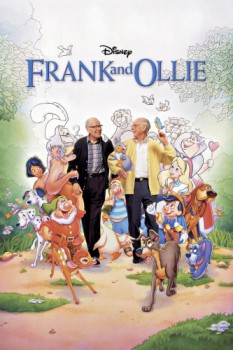

Country:United States, 89 minutes
Spoken languages:English
Genres:Documentary
Director(s):Theodore Thomas
Writer(s):
Video Codec:Unknown
Number: 262

Certification:PG
Storyline:
Before computer graphics, special effects wizardry, and out-of-this world technology, the magic of animation flowed from the pencils of two of the greatest animators The Walt Disney Company ever produced -- Frank Thomas and Ollie Johnston. Frank and Ollie, the talent behind BAMBI, PINOCCHIO, LADY AND THE TRAMP, THE JUNGLE BOOK, and others, set the standard for such modern-day hits as THE LION KING. It was their creative genius that helped make Disney synonymous with brilliant animation, magnificent music, and emotional storytelling. Take a journey with these extraordinary artists as they share secrets, insights, and the inspiration behind some of the greatest animated movies the world has ever known!
Cast:
Frank Thomas (as Himself), Ollie Johnston (as Himself), Glen Keane (as Himself), Andrew Gaskill (as Himself), John Canemaker (as Himself)
Medium: Media file,
Location: D:\Animation\Disney History\Frank and Ollie.mp4
Loaned: No
Aspect ratio: Unknown